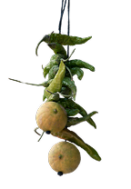
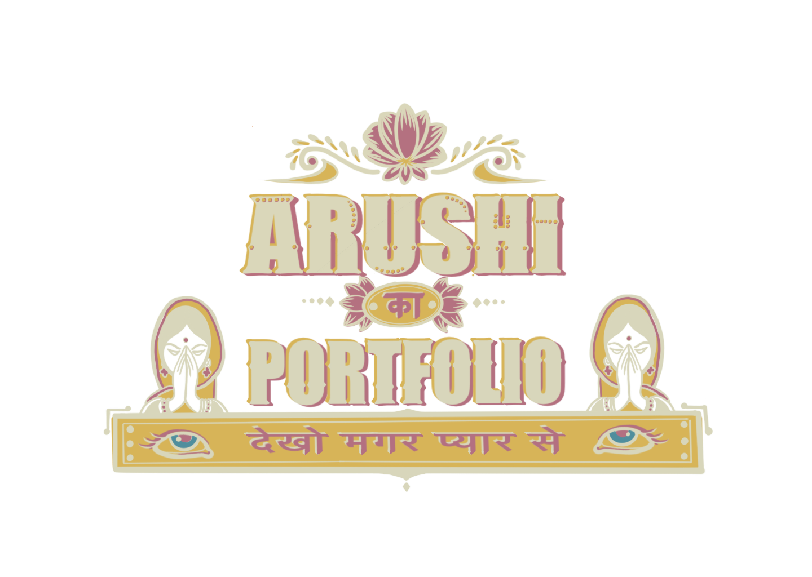
ARUSHI का PORTFOLIOदेखो मगर प्यार से
[Drop assets/cover-art.png here]
'}))">


ARUSHI का PORTFOLIOI design products that ask for people’s money, attention, or long-term commitment to their health.
Product Designer II at Ketto with 3+ years of experience across crowdfunding (Ketto), an early-stage US partner (equalall), and a 0→1 medical weight-loss product (MetaGo). My work spans acquisition, activation, retention, and referral, combining qualitative research with AI-assisted workflows.
Trained at NIFT Mumbai in fashion and lifestyle design, I now design digital products with a strong focus on human behaviour and usability.
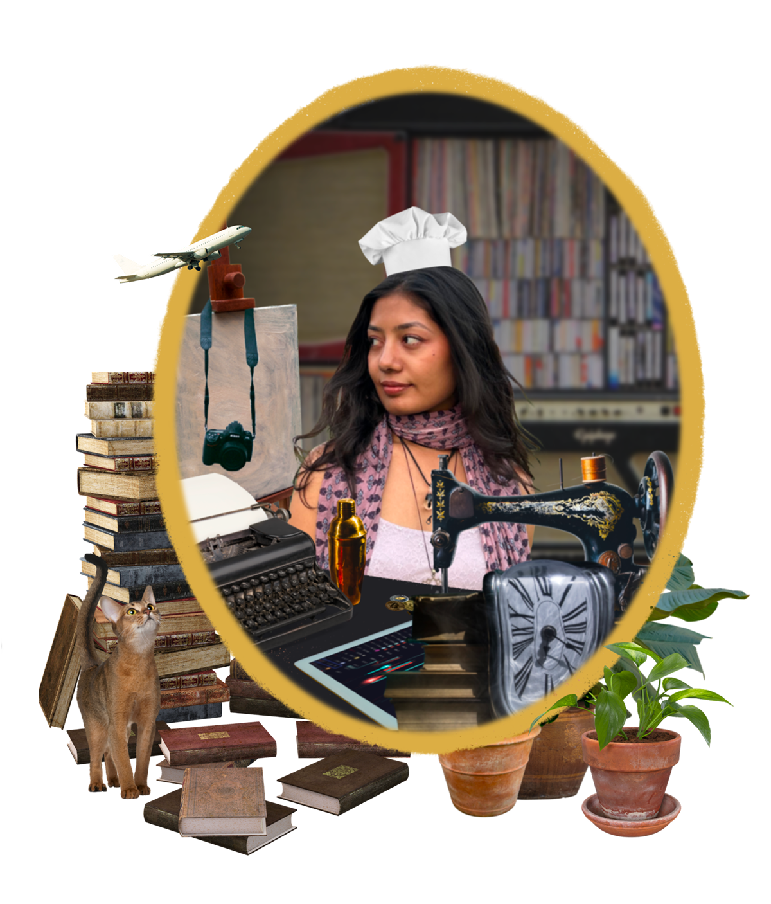
Treated thank-you, updates, and fundraiser-ended as a system instead of three afterthoughts. Picked up the phone with donors. Reframed a dead-end page into a conversion engine.
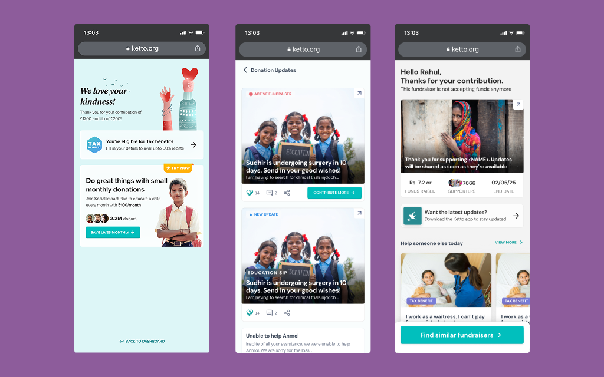
assets/project-01.png'}))">Designed a six-month medical commitment from a blank page. Acquisition website + quiz, logged-in MVP, an AI-built app, and a research engine that drives leadership decisions monthly.
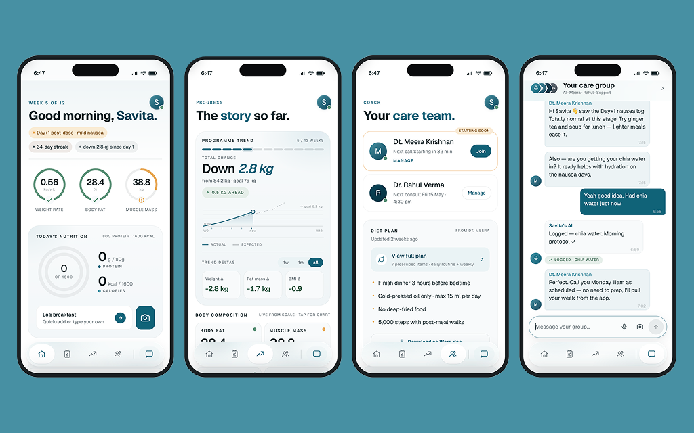
assets/project-02.png'}))">A small design intervention rooted in user research that scaled to 15% of total GMV in six months. Reframing how donors perceive online giving.
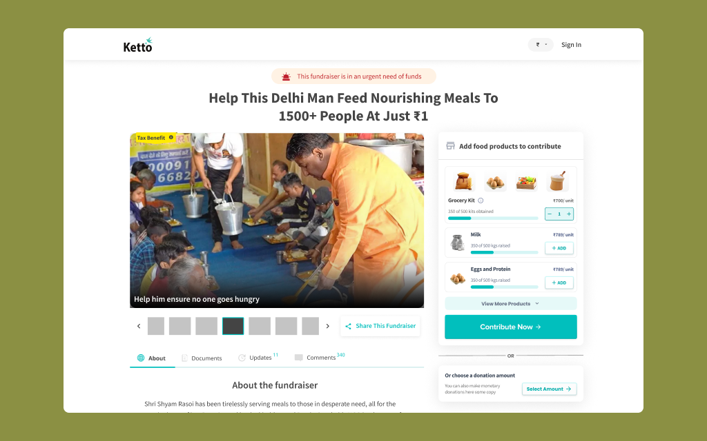
assets/project-03.png'}))">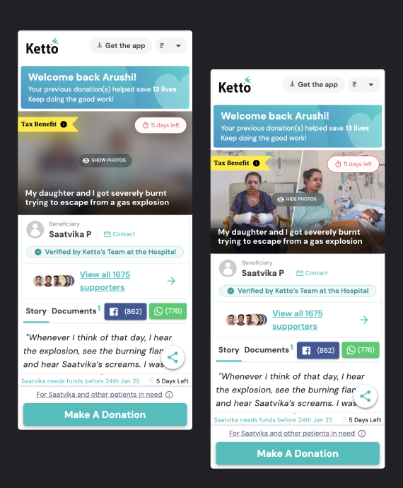
assets/scbi-01.png'}))">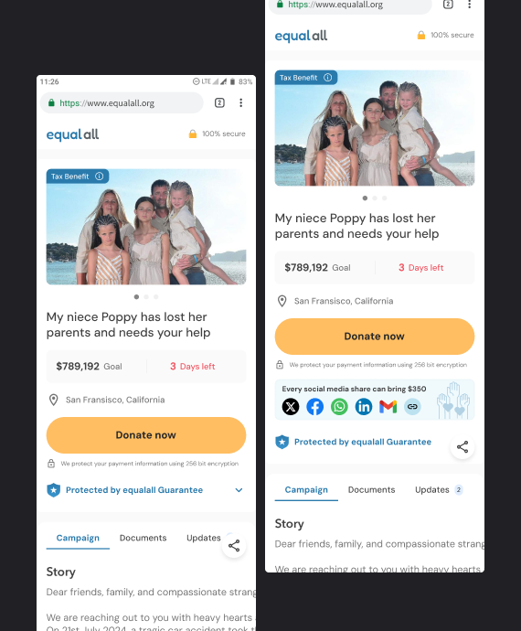
assets/scbi-02.png'}))">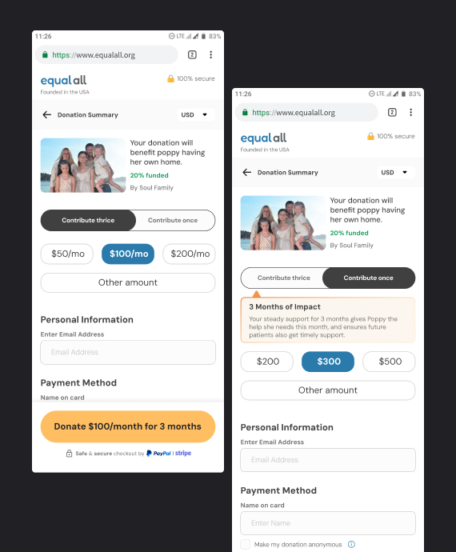
assets/scbi-03.png'}))">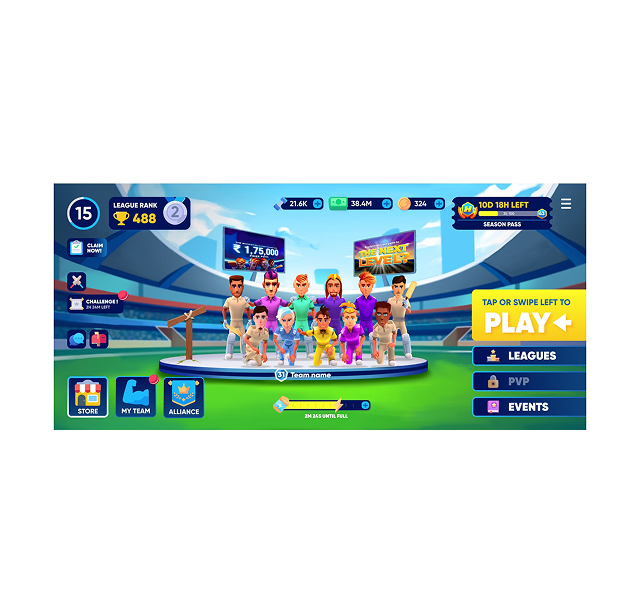
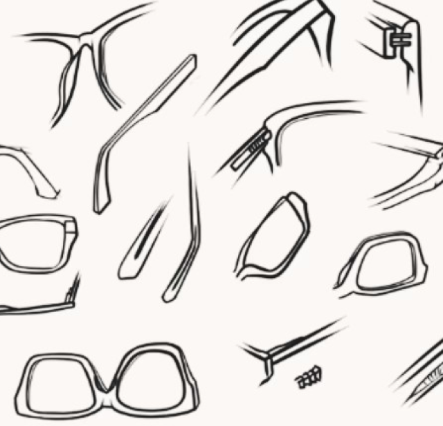
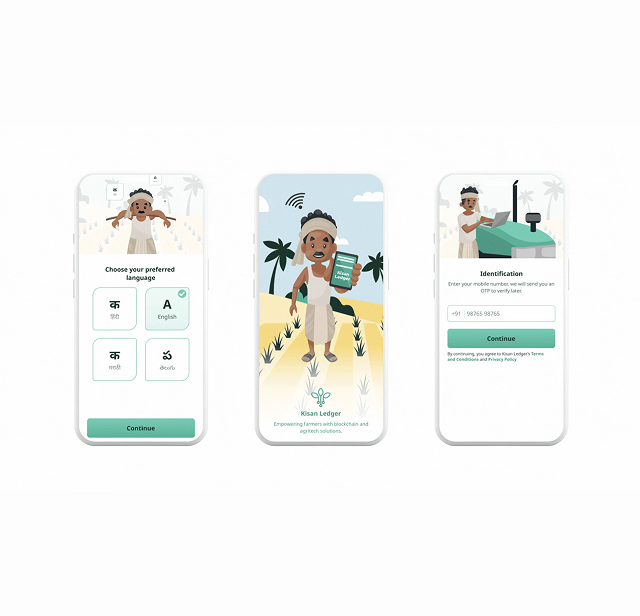
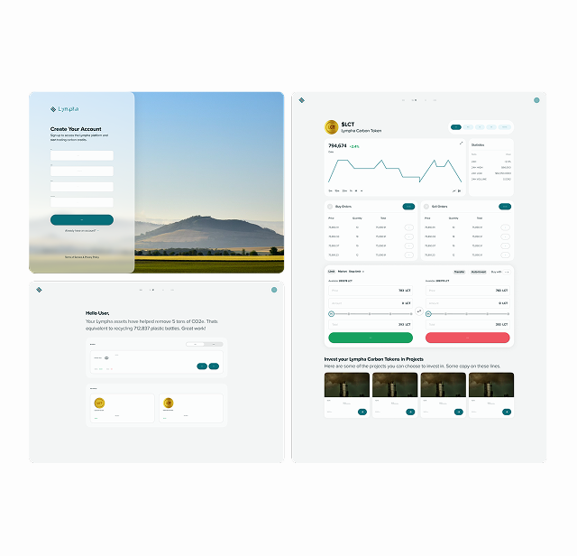
Outside work, I enjoy travel journaling, urban sketching, and mixology — interests that keep me observant and creatively engaged.
I previously built Desmoi, an androgynous accessories brand, and later collaborated with a sustainability-focused label.
I also enjoy strength training, yoga, dance, and board games, which help me stay disciplined, social, and curious outside of work.
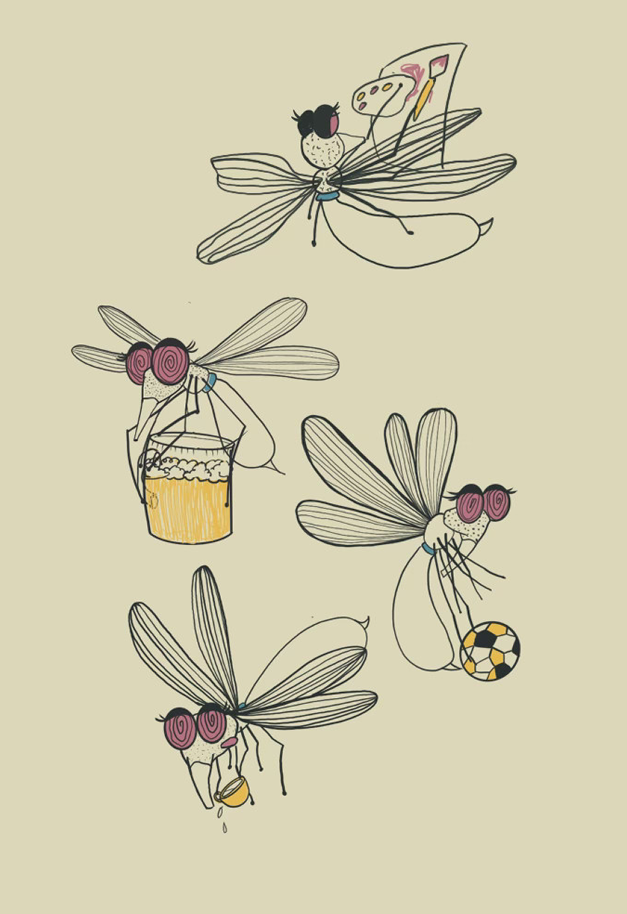
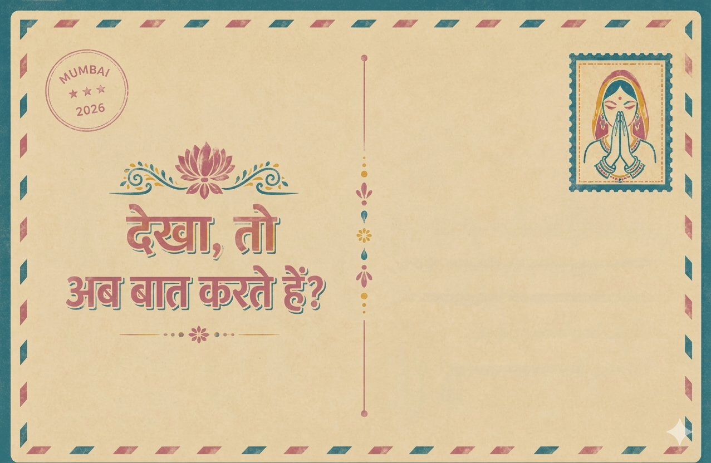
Most crowdfunding platforms focus heavily on the transaction itself. The thank-you screen, updates flow, and campaign-ended page are often treated as secondary experiences.
But for Ketto, post-donation is where retention, repeat giving, and long-term trust are built.
I approached post-donation as a connected journey across three moments:
I worked on all three surfaces sequentially, with each project informing the next.
Ketto had multiple thank-you page variants across products, each with different layouts, logic, and upsell patterns.
I standardized the experience into a single scalable framework with consistent components and behaviour.
+17% increase in upsell conversion across thank-you pages.
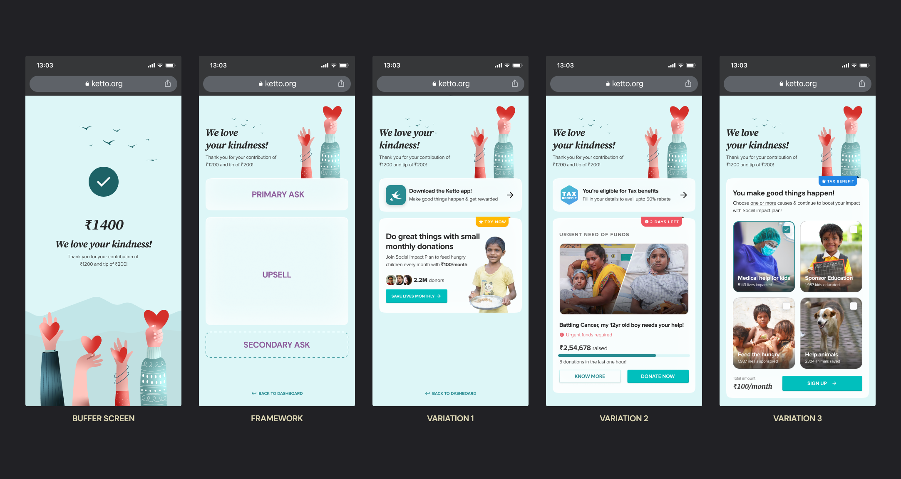
Drop at assets/post-donation-thankyou.png'}))">After donating, users receive updates about how their contribution is being used. The existing experience treated updates as passive communication.
I redesigned the page to strengthen continuity between the donor and the cause, while creating clearer opportunities for continued support.
The updates surface became a new acquisition channel for SIP donations.
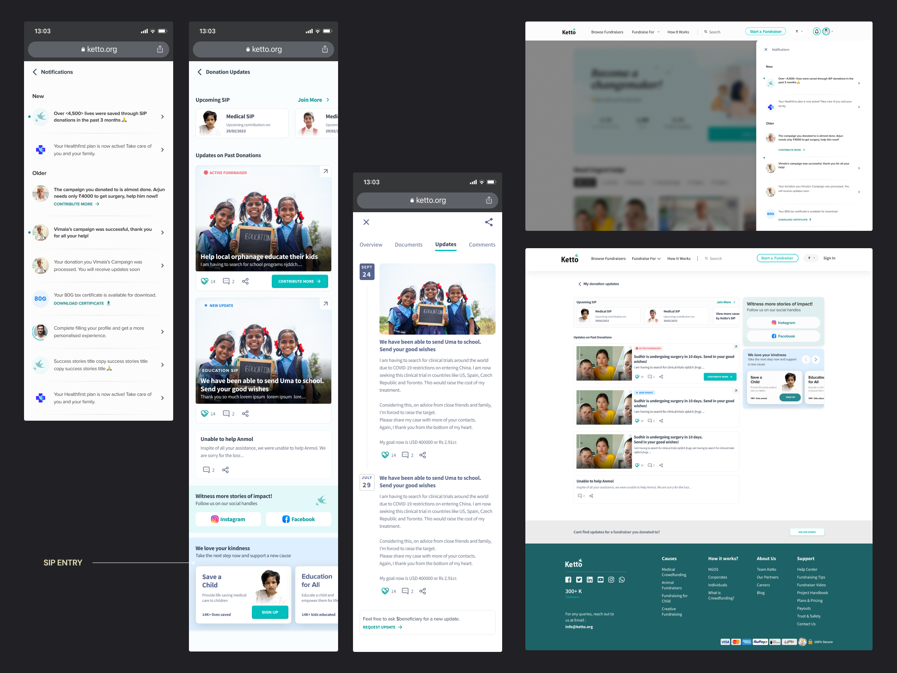
Drop at assets/post-donation-updates.png'}))">When a fundraiser closes, donor intent often still exists — but the existing page acted as a dead end.
Donations from this surface were near-zero, effectively a dead end.
Before redesigning the page, I spoke directly with donors who had visited closed campaigns to understand what they expected at that moment.
One insight became clear: donors wanted closure before another ask.
My early concepts focused too heavily on redirecting users to new campaigns. The interviews showed that users first wanted to understand what happened to the patient, family, or cause they had supported.
The redesign prioritized:
Upsell opportunities remained part of the experience, but only after users received emotional closure.
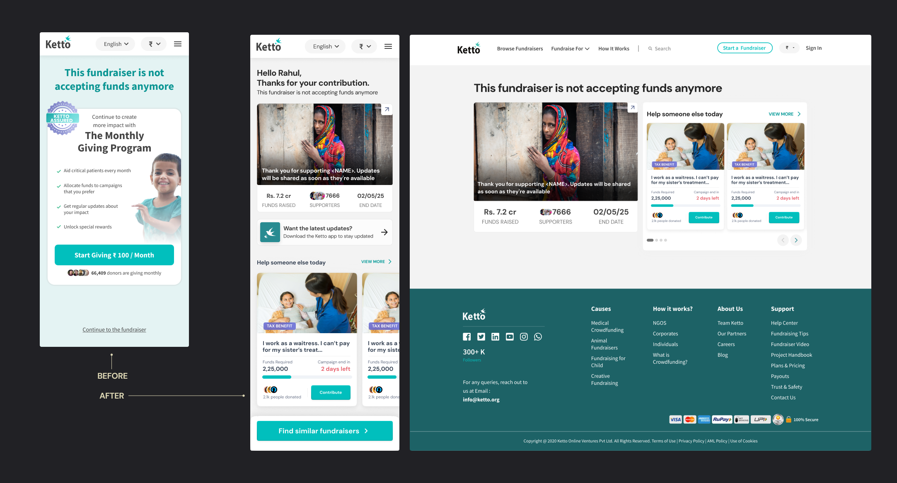
Drop at assets/post-donation-fundraiser.png'}))">What had been a near-zero surface is now driving a meaningful share of post-campaign giving.
Together, the three interventions improved post-donation conversion from 2% to 12% with increased Average Transaction Size by ~50%.
Users are not always ready for the next action a business wants them to take. Understanding emotional context is as important as optimizing funnels.
Direct conversations with users surfaced insights that analytics alone could not.
MetaGo is a medical-first weight-loss platform built within Ketto.
Eligible users are prescribed GLP-1 medications and supported through doctor consultations, coaching, diet plans, and ongoing tracking across a six-month program.
The onboarding flow asks users for significant commitment:
Although incubated within Ketto, MetaGo operates as a separate product with a different audience, problem space, and product language.
I begin by designing the ideal version of the experience before aligning with engineering and product constraints.
This helps the team make deliberate trade-offs during MVP planning, while maintaining clarity on the long-term direction of the product.
We initially launched multiple landing-page variants with different positioning and CTAs. Over time, the quiz became the strongest conversion mechanism.
The quiz helped:
Early research showed that users were uncomfortable with the word "injection."
In practice, the medication used an auto-injector mechanism closer to an EpiPen than a traditional syringe.
We updated product language and visual communication to better reflect the actual experience, which reduced hesitation during onboarding.
Among users who paid ₹1,799 and later dropped off, most cited concerns around GLP-1 medication itself:
Price was not the primary barrier.
This shifted the focus from pricing optimization to trust-building and education.
The recommendation was to introduce targeted educational communication before doctor consultations, helping users understand the treatment model and address concerns proactively.
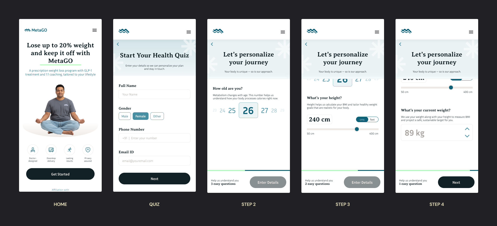
Drop at assets/metago-acquisition.png'}))">Once users entered the program, the experience included:
A key focus during MVP planning was ensuring every screen led to a clear next step, even within a reduced scope.
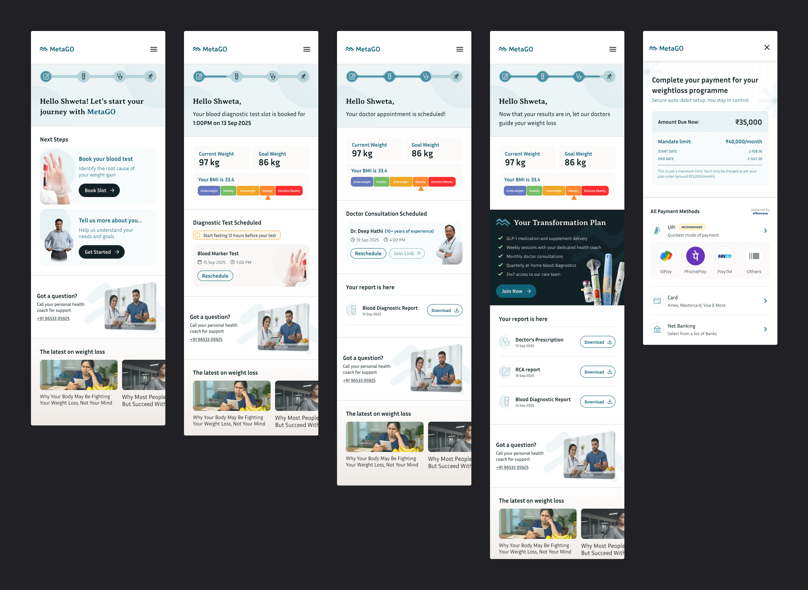
Drop at assets/metago-activation.png'}))">Research showed that most users wanted a dedicated app experience, particularly for:
I designed and shipped two versions of the app in quick succession, using AI tools to speed up synthesis, iteration, and prototyping workflows.
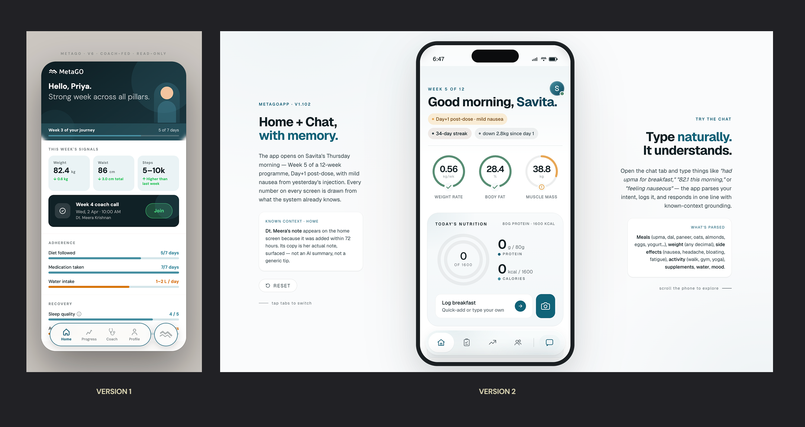
Drop at assets/metago-app.png'}))">🔒 View the interactive prototypes (password protected)
Research became a core part of product decision-making.
The two informed each other continuously: behavioural patterns in dashboards guided research questions, while qualitative findings shaped future product decisions.
Early users often focused on cravings and visible weight reduction.
Over time, users also reported improvements in:
This led to changes in onboarding expectations and the introduction of non-scale progress tracking inside the app.
Users valued accountability and support early in the journey. However, by later stages of the program, some users began comparing MetaGo's cost against purchasing medication independently.
This highlighted the need to evolve the coaching model as user maturity increased.
Diet planning decisions often involved another family member responsible for meal preparation.
This influenced coaching protocols and communication strategies.
The same research workflow also informed:
Research was not a separate function from product design — it directly shaped roadmap and prioritization decisions.
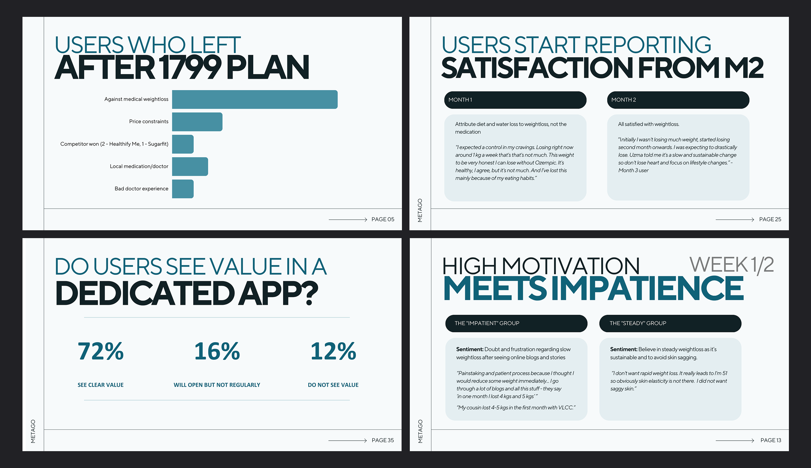
Drop at assets/metago-research.png'}))">Designing 0→1 products requires clarity around priorities, constraints, and sequencing.
The business metric being optimized is not always the same metric users emotionally value most.
During a donor research call, one user said:
"It feels nicer to feed a cow a banana than to donate online."
The comment highlighted a larger behavioural gap: online donation often feels intangible.
Donors wanted a clearer sense of what their contribution was enabling.
The existing donation flow already performed well, so the solution needed to work within the current structure rather than replace it.
I introduced a single component on food-and-hunger campaigns that allowed users to donate toward tangible items instead of generic amounts.
Examples:
The underlying donation values remained the same, but the framing became more concrete and emotionally understandable.
The standard donation flow remained available alongside it.
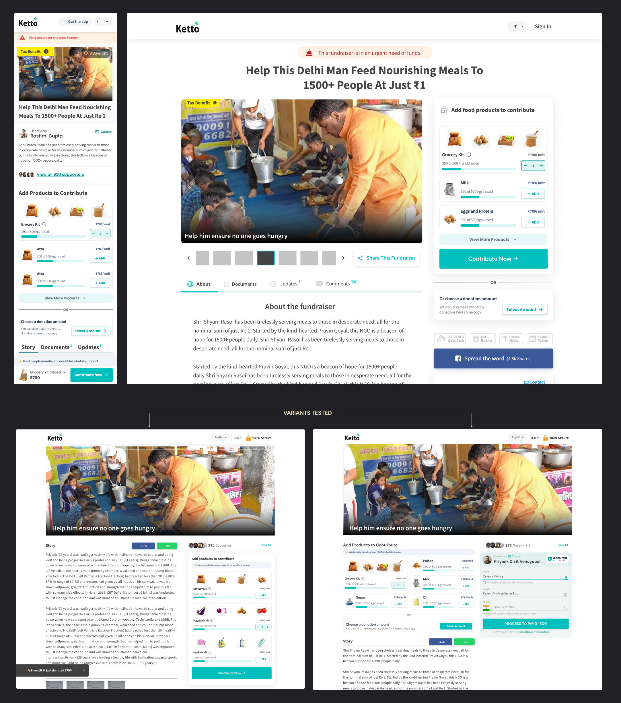
Drop at assets/new-giving-component.png'}))">The intervention was integrated into the existing post-donation ecosystem:
Because the supporting infrastructure already existed, the feature could launch quickly without requiring major platform changes.
Within six months, the intervention contributed 15% of total GMV.
The growth came from:
Small interventions can create outsized impact when they align with existing user behaviour.
In this case, the challenge was not changing the donation flow entirely, but reframing how the contribution was understood.